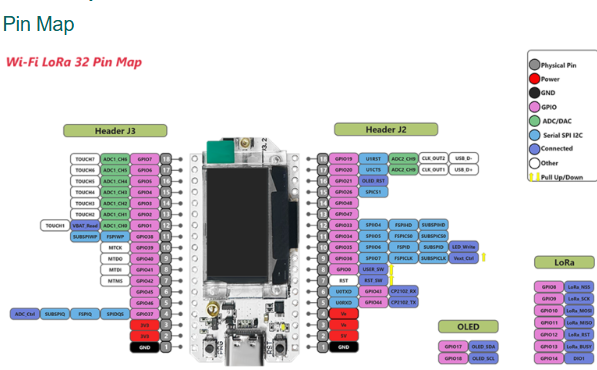
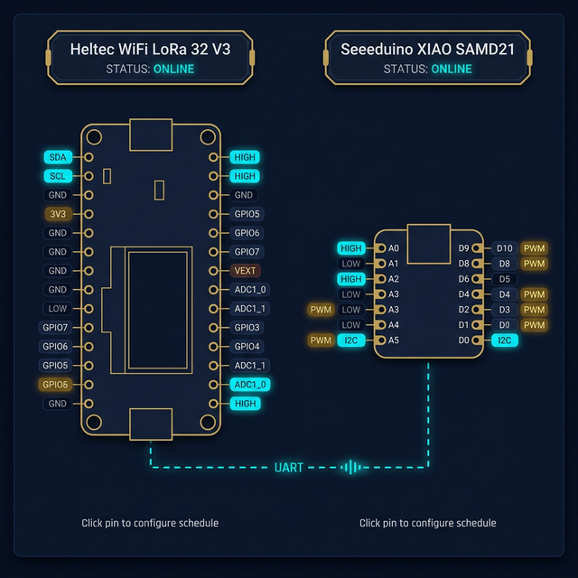
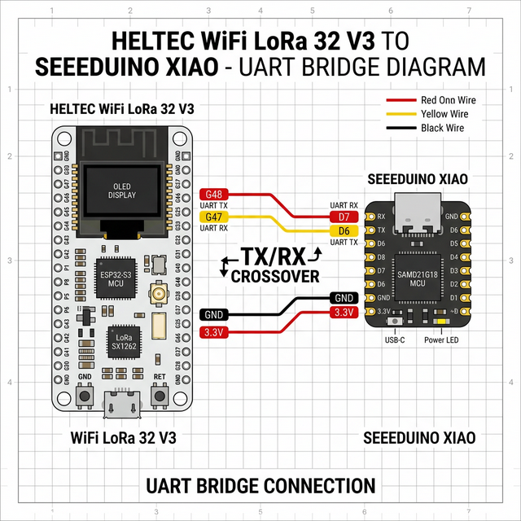

Hardware Setup
Bill of materials, pinout, wiring guide, and power considerations.
Bill of Materials
| Component | Spec | ~Cost |
|---|---|---|
| MCU Board | Heltec WiFi LoRa 32 V3 (ESP32-S3) | $18 |
| Radio | SX1262, 915 MHz, 10 dBm | Included |
| Display | 128×64 OLED (SSD1306, I2C) | Included |
| Relay Module | 4-channel (1× 110V, 3× 12V) | $5–8 |
| Sensor | DHT22 (temp/humidity) | $3 |
| Battery | 3.7V LiPo (ADC-monitored) | $5–10 |
Pinout
| Pin | Function | Notes |
|---|---|---|
| 5 | Relay 1 (110V) | HIGH = ON |
| 46 | Relay 2 (12V) | HIGH = ON |
| 6 | Relay 3 (12V) | HIGH = ON |
| 7 | Relay 4 (12V) | HIGH = ON |
| 35 | LED | Built-in indicator |
| 15 | DHT22 Data | VExt powered |
| 36 | VExt Control | External sensor power |
| 1 | Battery ADC | Voltage divider |

Pin & Technical Diagrams


Battery Management
- >3.7V — Normal operation, all features enabled
- 3.4V–3.6V — Low power warning, WiFi TX throttled
- <3.4V — Critical shutdown, all relays forced LOW
Power Considerations
Relays default to LOW on boot. VExt power is only active during sensor measurement cycles to conserve energy.
Satellite Extended GPIO (MCP23017)
The MCP23017 is a 16-channel I2C GPIO expander. It shares the Heltec V3's existing I2C bus (OLED at 0x3C), expanding available GPIO by up to 128 additional pins via daisy-chaining up to 8 expanders.
Wiring Configuration
| Component | MCP23017 Pin | Heltec V3 GPIO | Note |
|---|---|---|---|
| I2C SDA | Pin 13 | GPIO 17 | Shared with OLED display |
| I2C SCL | Pin 12 | GPIO 18 | Shared with OLED display |
| Power (3.3V) | Pin 9 | 3.3V | |
| Ground | Pin 10 | GND | |
| Reset | Pin 18 | 3.3V | Pull-up (never drive LOW) |
| Address A0/A1/A2 | Pins 15-17 | GND or 3.3V | Sets I2C address 0x20–0x27 |
The OLED uses 0x3C. MCP23017 default (all address pins LOW) is 0x20. No conflict.
Multi-Expander Addressing
Up to 8 MCP23017 chips can share the same bus by setting address pins differently:
| Address | A2 | A1 | A0 |
|---|---|---|---|
0x20 | LOW | LOW | LOW |
0x21 | LOW | LOW | HIGH |
0x22 | LOW | HIGH | LOW |
0x23 | LOW | HIGH | HIGH |
| … up to | |||
0x27 | HIGH | HIGH | HIGH |
Firmware Integration
Do NOT call Wire.begin() again in the MCP23017 init — the Heltec SDK already initializes I2C for the OLED during Heltec.begin(). Calling it again will glitch the display.
#include <Adafruit_MCP23X17.h>
Adafruit_MCP23X17 mcp;
void initMCP23017() {
// Wire already initialized by Heltec SDK on GPIO 17 (SDA) / 18 (SCL)
if (!mcp.begin_I2C(0x20)) {
Serial.println("MCP23017: NOT FOUND at 0x20");
return;
}
Serial.println("MCP23017: Initialized OK");
// GPA0-GPA7 as outputs (relay bank)
for (int i = 0; i < 8; i++) {
mcp.pinMode(i, OUTPUT);
mcp.digitalWrite(i, LOW);
}
// GPB0-GPB7 as inputs with pullups (sensors)
for (int i = 8; i < 16; i++) {
mcp.pinMode(i, INPUT_PULLUP);
}
}PlatformIO Dependency
lib_deps =
; ... existing entries ...
adafruit/Adafruit MCP23017 Arduino Library @ ^2.3.0Extended Pin Naming
MCP pins use the naming scheme PIN_MCP_<expander>_<pin>:
PIN_MCP_0_4 → Expander #0 (0x20), GPA4
PIN_MCP_1_12 → Expander #1 (0x21), GPB4This integrates with the existing getPinFromName() abstraction in CommandManager/DataManager.
Interrupt Wiring (Event-Driven)
Wire MCP23017 INTA → any free ESP32 GPIO (e.g. GPIO 38) for ISR-driven change detection:
pinMode(38, INPUT_PULLUP);
attachInterrupt(38, mcpInterruptHandler, FALLING);